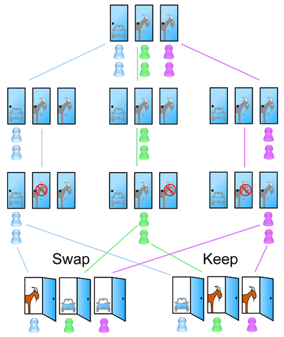
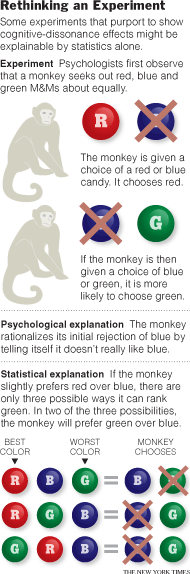

Don Francisco y la Disonancia Cognitiva

Don Francisco
Cuando era chico no había mucho que ver en televisión, y Sábados Gigantes (así se llamaba en aquel entonces) dominaba la pantalla del fin de semana.
Eran populares sus concursos, todos copias de programas norteamericanos, claro que muchos de nosotros no lo sabíamos (eso explica el mote de "Guatón Copión" que le dió a Don Francisco el humorista Fernando Alarcón, con el personaje Pepito TV, que se encargaba de entretenernos el domingo).
Uno de los concursos típicos era el de las puertas, se colocaban 3 puertas, A, B y C. El concursante tenía que elegir una de las tres, detrás de sólo una de ellas se encontraba un suculento premio, típicamente un automóvil.

Monty Hall, famoso presentador de concursos norteamericano de la década de 1960.
Este concurso era una variante, o adaptación, de un concurso norteamericano llamado Let's Make a Deal, presentado por Monty Hall. Este concurso es la inspiración de un interesante problema matemático llamado el Problema de Monty Hall.
La formulación del problema es la siguiente:
“El concursante debe elegir una puerta de entre tres (todas cerradas), el premio consiste en llevarse lo que se encuentra detrás de la elegida. Se sabe con certeza que tras una de ellas se oculta un automóvil, y tras las otras dos hay sendas cabras. Una vez que el concursante haya elegido una puerta y comunicado su elección a los presentes, Monty, el presentador, que sabe lo que hay detrás de cada puerta, abrirá una de las otras dos y mostrará que detrás hay una cabra. A continuación, le da la opción al concursante de cambiar, si lo desea, de puerta (tiene dos opciones) ¿Debe el concursante mantener su elección original o escoger la otra puerta? ¿Hay alguna diferencia?”
Si recuerdan el concurso de Don Francisco era muy similar. Pero concentrémonos en el problema. Acá hay un diagrama tomado de Wikipedia:

La situación después de que el presentador ha abierto la puerta
Dado que quedan dos puertas por abrir uno pensaría que la probabilidad de que el auto esté detrás de cualquiera de las puertas es de 1/2 (50%), ¿verdad? Entonces daría lo mismo quedarse con la elección inicial, o cambiarse. Pero la verdad es que no. Si ustedes estuvieran en esta situación lo que corresponde es que cambien su elección para tener más probabilidades de ganar.
Esto parece paradójico, pero si uno hace el análisis de probabilidades correcto, lo que maximiza las posibilidades de ganar el auto es cambiar la puerta escogida.
La razón es la siguiente: primero, Don Francisco, o el presentador, sabe cual es la puerta que esconde el auto. Inicialmente, antes de que el presentador abra la puerta, la probabilidad de escoger la puerta con el auto es de 1/3. Si ustedes han escogido el auto, Don Francisco puede elegir cualquiera de las otras dos puertas, si ustedes cambian de puerta pierden. Por otro lado, si han elegido una puerta que esconde la cabra, entonces Don Francisco sólo puede escoger la puerta que esconde la otra cabra. En ese caso si ustedes cambian van a elegir la puerta con el auto. En resumen, si mantienen la elección original ganan, si escogiero originalmente el coche (con probabilidad de 1/3), mientras que si cambian, ganan si escogiero originalmente una de las dos cabras (con probabilidad de 2/3). Por lo tanto, el concursante debe cambiar su elección si quiere maximizar la probabilidad de ganar el coche.
Este es un diagrama de las posibilidades, les sugiero revisarlo para que puedan entender el razonamiento:

O pueden leer el artículo en Wikipedia, que contiene el cálculo matemático de las probabilidades.
Ahora bien, este resultado paradojal afecta algunos resultados en experimentos sicológicos usados para estudiar un aspecto de la disonancia cognitiva. En particular algo que se conoce como el paradigma de la racionalización de elección.
Hubo un experimento en Yale que involucraba monos capuchinos. A los monos se les presentaba chocolates M&M de colores, digamos rojo, azul y verde. A los monos se les daba a elegir entre dos chocolates.

Si el mono escogía el rojo, por sobre el azul, entonces se le daba a continuación la opción de elegir entre azul y verde. Los investigadores notaron que dos tercios del tiempo los capuchinos rechazaron los chocolates azules en favor de los verdes, lo que parecía confirmar la teoría de la racionalización de elecciones: una vez que rechazamos algo, nos decimos a nosotros mismos que no nos gustaba de todas maneras (y con esto nos libramos del pensamiento disonante de que hemos hecho una elección incorrecta).
La imagen de la derecha tomada de este artículo del New York Times, muestra la explicación sicológica, basada en el paradigma de la racionalización. Pero resulta que se puede explicar estadísticamente usando los mismos principios del problema de Monty Hall.
Este es el resultado al que llegó el economista M. Keith Chen. Chen cuestiona la validez de muchos experimentos sicológicos sobre la teoría de racionalización ¡desde 1956!
Según Chen hay cientos de experimentos sicológicos que fallan de la misma forma.
Para Chen es posible que el paradigma de la racionalización de elección siga siendo válido, pero no ha encontrado experimentos científicos que midan correctamente este efecto. "Toda la literatura que habla de este tema opera como si no existiera el problema de Monty Hall", es su conclusión.
Fuentes:
-
Wikipedia: El Problema de Monty Hall
-
Go Ahead Monkeys, Rationalize, Monkeys Do It Too, New York Times, noviembre 2007.
-
And Behind Door No. 1, A Fatal Flaw, New York Times, Abril 2008.
- How Choice Affects and Reflects Preferences: Revisiting the Free Choice Paradigm, M. Keith Chen & Jane L. Risen.